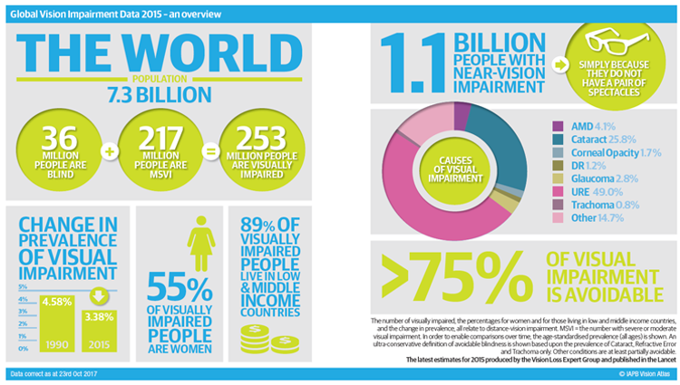

GLOBAL ISSUES IN EYE HEALTH
In the world we live in, there are a number of diseases and ailments that require international efforts for treatment, management, and eventual eradication. One such issue is vision impairment, which brings pain and loss to not only the affected individuals and their families, but also society as a whole. Vision Impairment has deep socioeconomic implications.
According to WHO’s report in 2015, there are 253 million people who suffer from visual impairment, and every 5 seconds a person goes blind. 75% of these visual impairments are avoidable, And 89% of those who are visually impaired live in developing countries, where they are not medically treated due to financial reasons, lack of medical facilities, ignorance, etc. Personal safety as well as chronic poverty are linked to these issues.

The three main causes of visual impairment (restricted visual function by damaged visuometer) are disorder of refraction and accommodation, cataract, and glaucoma. The reasons for blindness (status where sight is already lost) are cataract, glaucoma, and macular degeneration. 25.8% of visual impairment is caused by cataracts, which can be cured through surgery by removing the corrupted crystalline lens and inserting an artificial crystalline lens. In addition, unlike other diseases, vision can be immediately restored after one surgery, with no risk to the individual’s everyday life immediately following the surgery. After one month, surgical scars will be totally healed and the individual can return to work.
In the case of disorder of refraction and accommodation, which is the second leading cause of visual impairment, for about $10, an individual can have prescribed glasses at an appropriate time, to prevent permanent low vision through proper visual correction. However glasses are not obtained due to financial reasons, ignorance, and lack of professional manpower, affecting educational and economic activities.
That is why VISION CARE conducts cataract surgery, performs eye exams with a professional optometrist, and provides prescription glasses for patients who do not have access to proper medical services. Vision Care also promotes blindness prevention and eye health programs in the local communities.